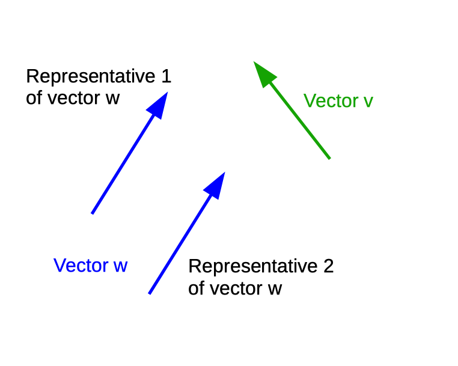
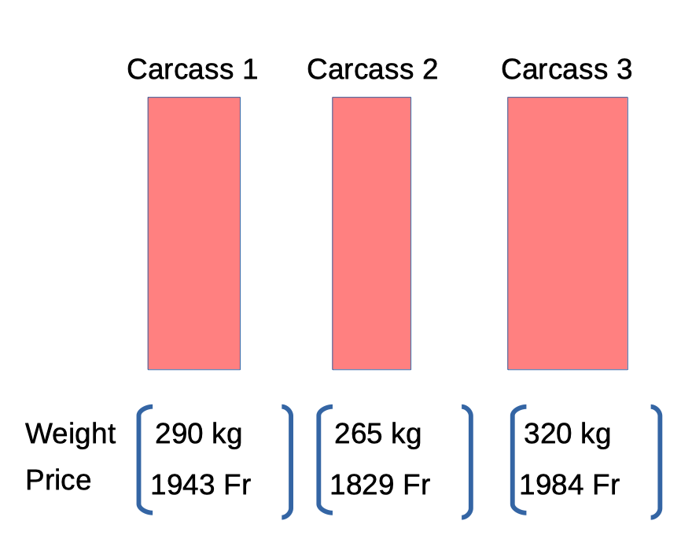
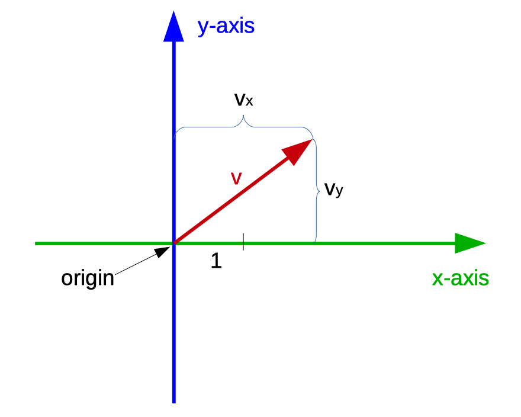
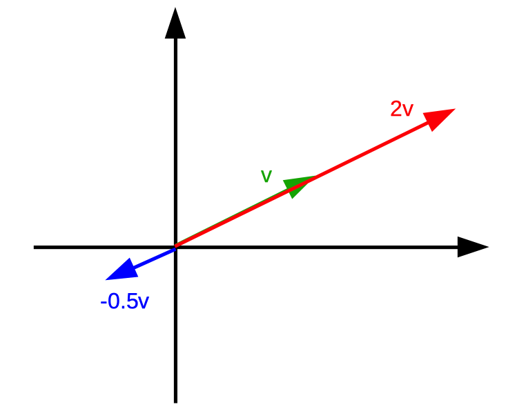

Chapter 2 Introduction To Linear Algebra
Linear Algebra is a large area from which we only need the following three topics
- Vectors
- Matrices and
- Systems of linear equations.
2.1 Glimpse Ahead
The central topic of this course is the prediction of breeding values. Most approaches to predict breeding values require the solution of large systems of linear equations. These systems of equations are written down using vectors and matrices. Hence the three mentioned topics are important to understand at a level that they can be used as tools for the prediction of breeding values.
2.2 Vectors
The material of this section is largely based on the video tutorial (https://youtu.be/fNk_zzaMoSs) from (3blue1brown 2016). We try to give a summarized transcript of the video. The vector is the fundamental building block of linear algebra. There are three different but related concepts about what vectors are. We call them
- the physics perspective
- the computer science perspective and
- the mathematics perspective.
The mathematics perspective tries to provide a very general concept, saying that anything can be a vector as long as, one can add two vectors or a vector can be multiplied by a factor and the result of both operations is a vector again. For what we want to use vectors for in the context of livestock breeding and genomics, the mathematics perspective is not so useful, hence we ignore it from now on.
2.2.1 Physics Perspective
The physics perspective is that vectors are arrows with a certain length and a direction they are pointing to. As long as length and direction are the same, the arrows can be moved around and they are still the same vector. Different arrows with the same length and the same direction are called representatives of the same vector. Vectors that are in a flat plane are called two-dimensional. Those who are sitting in the same Euclidean space that we are all living in, are called three-dimensional.

2.2.2 Computer Science Perspective
In the computer science perspective vectors are ordered list of numbers. Later we will see that vectors can also contain more general objects like strings. As an example, we assume that we are analyzing carcasses and the only thing we know about a carcass is its slaughter-weight (SW) and its price (P). The different carcasses can then be represented by a pair of numbers the first being the slaughter-weight and the second being the price. It is important to note here, that the order of the number matters. In terms of vectors, here each carcass is represented by a two-dimensional vector.

2.2.3 Geometric Context
Some basic properties of vectors are introduced using the geometric context, that a vector is an arrow located in a certain coordinate system with its tail sitting at the origin of the coordinate system. This is a little bit different from the physics perspective (see 2.2.1) where the arrow can sit anywhere in space. In linear algebra it is almost always the case that vectors are rooted at the origin. Once we understand the properties of vectors in the context of arrows in space, we can then translate these properties to the list-of-numbers point of view (see 2.2.2) considering the coordinates of the vectors.
2.2.4 Coordinate System
It is important to introduce the coordinate system, because this will be the basis of the correspondence between the two perspectives of linear algebra. For the moment, we focus on two dimensions. The horizontal line is called the x-axis and the vertical line is called the y-axis. The place where the two lines intersect is called the origin. An arbitrary length is chosen to represent \(1\). The coordinates of a vector is a pair of numbers that give instructions for how to get from the tail of that vector at the origin to its tip. The first number tells you how far to walk along the x-axis (positive numbers indicating rightward motion, negative numbers indicating leftward motion) and the second number tell you how far to walk parallel to the y-axis (positive numbers indicating upward motion, negative numbers indicating downward motion).

2.2.5 Vector Operations
The vectors by themselves can be pretty interesting objects, but they get really useful when considering some operations that we can perform on them. Here we consider three basic operations.
- addition
- multiplication by a scalar number and
- dot product
2.2.5.1 Addition
Let us assume, we have two vectors \(v\) and \(w\). To add these two vectors, move the second one such that its tail sits at the tip of the first one. Then draw a new vector from the tail of the first one to the tip of the second one. The new vector corresponds to the sum of the two vectors (Figure 2.1).
Figure 2.1: Addition of two vectors
Numerically, vector addition corresponds to summing up each of the coordinates individually. Hence if we have two vectors \(v\) and \(w\) with their coordinates given as
\[v = \left[\begin{array}{c} v_x \\ v_y \end{array}\right] \text{, } w = \left[\begin{array}{c} w_x \\ w_y \end{array}\right]\]
then the sum \(v+w\) has coordinates
\[v+w = \left[\begin{array}{c} v_x + w_x \\ v_y+w_y \end{array}\right]\]
2.2.5.2 Multiplication by a Scalar Number
This operation is best understood by looking at a few examples. If we take the number \(2\) and multiply it by a certain vector \(v\), this means that we stretch out the vector \(v\) such that it is \(2\) times as long as the original vector. Multiplication of a vector with positive numbers does not change the direction of the vector. Multiplying a vector \(v\) with a negative number like \(-0.5\) then the direction gets flipped around and then squished by \(0.5\).

The operation of multiplying a vector by a given number, like \(2\) or \(-0.5\) is also called scaling and that is the reason why in linear algebra the numbers like \(2\) and \(-0.5\) are called scalar numbers or just scalars. Numerically, stretching a vector by a given number like \(2\), corresponds to multiplying each of the coordinate components by that factor \(2\). For a vector \(v\) with coordinate components \(v_x\) and \(v_y\), the vector \(2v\) has coordinates \(2v_x\) and \(2v_y\)
\[v = \left[\begin{array}{c} v_x \\ v_y \end{array}\right] \text{, }\quad 2v = \left[\begin{array}{c} 2v_x \\ 2v_y \end{array}\right]\]
2.2.5.3 Dot Product
The dot product is explained in a different video that can be seen on https://youtu.be/LyGKycYT2v0. Numerically, if you have two vectors of the same dimension, meaning two lists of numbers of the same length, e.g. \(v\) and \(w\) then their dot product \(v \cdot w\) can be computed by pairing up all of the coordinates, multiplying these pairs together and adding the result. So the vectors
\[v = \left[\begin{array}{c} v_x \\ v_y \end{array}\right] \text{ and } w= \left[\begin{array}{c} w_x \\ w_y \end{array}\right]\]
their dot product \(v \cdot w\) then is computed as
\[v \cdot w = v_x * w_x + v_y * w_y\]
2.3 Matrices
The introduction to the topic of matrices is available from https://youtu.be/kYB8IZa5AuE and https://youtu.be/XkY2DOUCWMU. An \(m \times n\) matrix is a table-like object of \(m*n\) numbers arranged in \(m\) rows and \(n\) columns. In general the \(m \times n\) matrix \(A\) has the following structure.
\[ A = \left[ \begin{array}{cccc} a_{11} & a_{12} & \ldots & a_{1n} \\ a_{21} & a_{22} & \ldots & a_{2n} \\ \vdots & & & \vdots \\ a_{m1} & a_{m2} & \ldots & a_{mn} \end{array} \right] \]
The \(m*n\) numbers inside of the square brackets are called elements of the matrix. The element of matrix \(A\) that is in row \(i\) and in column \(j\) is called \(a_{ij}\) or \((A)_{ij}\). As an example
\[ A = \left[ \begin{array}{ccc} 2 & 3 & 1 \\ 5 & 1 & 2 \end{array} \right] \] is a \(2 \times 3\) matrix. In the first row the second element corresponds to \((A)_{12} = a_{12} = 3\). An \(n\times n\) matrix (i.e. a matrix with equal numbers of rows and columns) is called a quadratic matrix. Two matrices \(A\) and \(B\) are called equal, if they have the same number of rows and columns and if the corresponding elements are the same, i.e.
\[ (A)_{ij} = (B)_{ij} \text{ for all i and j} \]
2.3.1 Special Matrices
The following matrices are special and are used in special cases.
- Nullmatrix: The \(m\times n\) matrix \(0\) is called Nullmatrix, if each element is equal to zero.
- Upper Triangular Matrix: The square matrix \(R\) is called upper triangular matrix, if \((R)_{ij} = 0\) for \(i>j\).
- Lower Triangular Matrix: The square matrix \(L\) is called lower triangular matrix, if \((L)_{ij} = 0\) for \(i<j\).
- Diagonal Matrix: The square matrix \(D\) is called diagonal matrix, if \((D)_{ij} = 0\) for \(i\ne j\).
- Identity Matrix: The diagonal matrix \(I\) is called identity matrix, if all diagonal elements \((I)_{ii} = 1\).
- Column Vector: A \(m\times 1\) matrix is often called a column vector.
- Row Vector: A \(1\times n\) matrix is is often called a row vector.
2.3.2 Matrix Operations
The following operations with matrices are defined.
2.3.2.1 Addition
For two \(m\times n\) matrices \(A\) and \(B\), their sum \(A+B\) is again a \(m\times n\) matrix with each element corresponding to the sum of the corresponding elements from \(A\) and \(B\). Hence, we can write
\[(A+B)_{ij} = (A)_{ij} + (B)_{ij} \text{ for all i and j}\]
2.3.2.2 Multiplication with a Number
A \(m\times n\) matrix A is multiplied by a number \(\alpha\) by multiplying every element \((A)_{ij}\) of \(A\) with \(\alpha\). The result \(\alpha * A\) is computed as \((\alpha * A)_{ij} = \alpha * (A)_{ij}\) for all \(i\) and \(j\).
2.3.2.3 Multiplication of two Matrices
Given a \(m\times n\) matrix \(A\) and a \(n\times p\) matrix \(B\), their matrix product \(AB\) is a \(m\times p\) matrix with
\[ (AB)_{ij} = \sum_{k=1}^n (A)_{ik} * (B)_{kj} = (A)_{i1} * (B)_{1j} + (A)_{i2} * (B)_{2j} + \ldots + (A)_{in} * (B)_{nj}\]
2.3.2.4 Laws of Matrix Operations
- Commutativity: For two \(m\times n\) matrices \(A\) and \(B\) the addition is commutative, i.e. \(A + B = B + A\).
- Associativity of addition: For \(m\times n\) matrices \(A\), \(B\) and \(C\), the addition is associative, i.e., \(A + (B + C) = (A + B) + C\)
- Associativity of multiplication: For a \(m\times n\) matrix \(A\), a \(n \times p\) matrix \(B\) and a \(p \times q\) matrix \(C\), the multiplication is associative, i.e., \(A(BC) = (AB)C\)
- Distributivity: For \(m\times n\) matrices \(A\) and \(B\) and \(n\times p\) matrices \(C\) and \(D\), the distributive law holds, i.e., \((A+B)C = AC + BC\) and \(A(C + D) = AC + AD\)
2.3.2.5 Matrix Transpose
Given a \(m\times n\) matrix \(A\), then the \(n\times m\) matrix \(A^T\) is called its transpose, if \((A^T)_{ij} = A_{ji}\). The matrix \(A\) is called symmetric, if \(A = A^T\). For every matrix \(A\) the transpose of the transpose is the matrix itself, i.e., \((A^T)^T = A\). For any \(m\times n\) matrices \(A\) and \(B\), the transpose \((A+B)^T\) of their sum \((A+B)\) is computed as
\[(A+B)^T = A^T + B^T\]
For every \(m\times n\) matrix \(A\) and every \(n\times p\) matrix \(B\), it holds that
\[(AB)^T = B^T A^T\]
2.3.2.6 Inverse of a Matrix
In this section, we are looking at square matrices. The inverse \(X\) of a square matrix \(A\) is defined as the square matrix that satisfies the condition \(AX = I\). If the inverse matrix \(X\) exists, then the matrix \(A\) is called invertable. If \(X\) does not exist, \(A\) is called singular. If the inverse of a matrix \(A\) exists, it is uniquely determined and we call it \(A^{-1}\).
Let us assume two invertable \(n\times n\) matrices \(A\) and \(B\), then the following equations hold
- \(A^{-1}A = I\)
- \(A^{-1}\) is invertable and \((A^{-1})^{-1} = A\)
- \(I\) is invertable and \(I^{-1} = I\)
- \(AB\) is invertable and \((AB)^{-1} = B^{-1}A^{-1}\)
- \(A^T\) is invertable and \((A^T)^{-1} = (A^{-1})^T\)
For every square matrix \(A\), the following statements are equivalent.
- \(A\) is invertable
- The system of equations \(Ax = b\) is solvable for every \(b\).
- The system of equations \(Ax = 0\) has only the trivial solution \(x=0\).
2.3.2.7 Orthogonal Matrices
A square matrix \(A\) is called orthogonal, if the condition \(A^TA = I\) holds. For two orthogonal matrices \(A\) and \(B\), the following statements hold.
- \(A\) is invertable and \(A^{-1} = A^T\)
- \(A^{-1}\) is orthogonal
- \(AB\) is orthogonal
- \(I\) is orthogonal
2.4 Systems Of Equations
Systems of linear equations are introduced based on (Nipp and Stoffer 2002) and (Searle 1971). Solving systems of linear equations is one of the fundamental tasks of linear algebra. We start with a general example of a system of linear equations which is given as
\[\begin{align} x_1 + 2x_2 &= 5 \notag \\ 2x_1 + 3x_2 &= 8 \tag{2.1} \end{align}\]
In (2.1) we are given a system of linear equations with two equations and two unknowns \(x_1\) and \(x_2\). The aim is to find numeric values for \(x_1\) and \(x_2\) such that both equations are satisfied. Inserting the values \(x_1 = 1\) and \(x_2 = 2\) into the above equations show that they are both satisfied. Hence the set \(L = \{x_1 = 1, x_2 = 2\}\) consisting of the values for \(x_1\) and \(x_2\) that satisfy both equations is called a solution or a solution set for the above shown equations.
In general, a linear system of equations consists of \(m\) equations and \(n\) unknowns. In the example (2.1), \(m=2\) and \(n=2\).
The example in (2.2) does not have any solutions.
\[\begin{align} x_1 + x_2 &= 4 \notag \\ 2x_1 + 2x_2 &= 5 \tag{2.2} \end{align}\]
This can be seen, that if the first equation in (2.2) is multiplied by \(2\), we get \(2x_1 + 2x_2 = 8\) which contradicts the second equation shown in (2.2).
A system with \(m=2\) equations and \(n=3\) unknowns in shown in (2.3).
\[\begin{align} x_1 - x_2 + x_3 &= 2 \notag \\ 2x_1 + x_2 - x_3 &= 4 \tag{2.3} \end{align}\]
There are infinitely many solutions consisting of \(x_1 = 2\), \(x_2 = \alpha\) and \(x_3 = \alpha\) for any real number \(\alpha\).
The examples in (2.1), (2.2) and (2.3) already show all possible cases that may occur when solving linear systems of equations. The question is how to determine the set of all solutions of a system of linear equations.
2.4.1 Matrix-Vector Notation
So far, we have written systems of linear equations explicitly in the sense that every equation was written on one line. For small systems this is not a problem. But when the number of equations (\(m\)) and the number of unknowns (\(n\)) get very large, the explicit notation is no longer feasible. Hence, we need a notation that can also be used for large systems of equations. The so-called matrix-vector notation provides an efficient way to write down large systems of equations very efficiently.
We return to the example given by (2.1) and we define the matrix \(A\) to be
\[ A = \left[ \begin{array}{cc} 1 & 2 \\ 2 & 3 \end{array} \right], \]
the vector \(x\) to be
\[ x = \left[ \begin{array}{c} x_1 \\ x_2 \end{array} \right], \]
and the vector \(y\) to be
\[ y = \left[ \begin{array}{c} 5 \\ 8 \end{array} \right], \]
With these definitions, we can write the system of equations given in (2.1) using matrix-vector notation as
\[\begin{equation} A \cdot x = y \tag{2.4} \end{equation}\]
2.5 Solving Systems of Linear Equations
If matrix \(A\) in (2.4) is not singular, i.e. the inverse Matrix \(A^{-1}\) of \(A\) does exist, the solution \(x\) to (2.4) can be written as \(x = A^{-1}y\). This result is obtained by pre-multiplying both sides of (2.4) with \(A^{-1}\) and since a matrix times its inverse results in the identity matrix \(I\), the solution is obtained as
\[\begin{align} A \cdot x &= y \notag \\ A^{-1}\cdot A \cdot x &= A^{-1} \cdot y \notag \\ I \cdot x &= A^{-1} \cdot y \notag \\ x &= A^{-1} \cdot y \tag{2.5} \end{align}\]
For systems of equations with a singular matrix \(A\), solutions can be found, if the equations are consistent. The linear equations \(Ax = y\) are consistent, if any linear relationship existing among the rows of \(A\) also exist among the corresponding elements of \(y\). As a simple example, the equations
\[ \left[ \begin{array}{cc} 1 & 2 \\ 3 & 6 \end{array}\right] \left[ \begin{array}{c} x_1 \\ x_2 \end{array}\right] = \left[ \begin{array}{c} 7 \\ 21 \end{array}\right] \] are consistent. In the matrix on the left the second row corresponds to three times the first row and in the vector on the right, the second element is also three times the first element. In contrast the equations
\[ \left[ \begin{array}{cc} 1 & 2 \\ 3 & 6 \end{array}\right] \left[ \begin{array}{c} x_1 \\ x_2 \end{array}\right] = \left[ \begin{array}{c} 7 \\ 24 \end{array}\right] \] are not consistent. From this example, we can already see that non-consistent equations do not have any solutions. But consistent equations \(Ax = y\) have a solution which can be written as \(x = Gy\) if and only if, \(AGA = A\) which means that \(G\) is a so-called generalized inverse of \(A\). The matrix \(G\) is often written as \(A^-\). The proof of this statement is given on page 9 of (Searle 1971).
References
3blue1brown. 2016. “What are vectors.” https://youtu.be/fNk{\_}zzaMoSs.
Nipp, Kaspar, and Daniel Stoffer. 2002. Lineare Algebra. 5th ed. Zurich: vdf Hochschulverlag.
Searle, S R. 1971. Linear Models. Wiley Clas. New York: John Wiley & Sons.